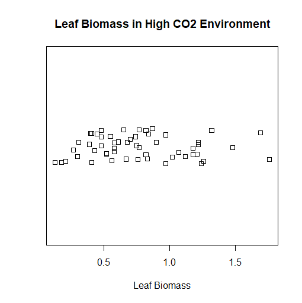
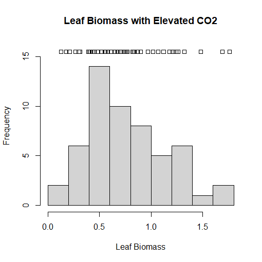
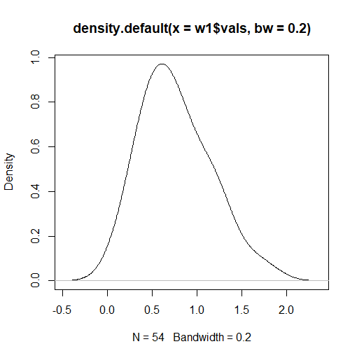
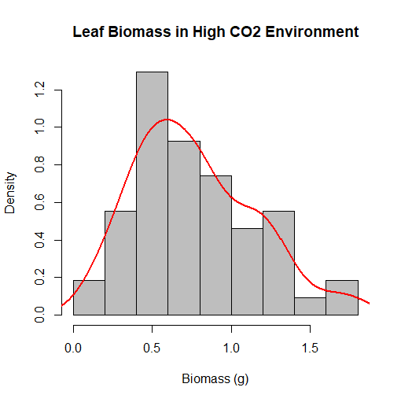
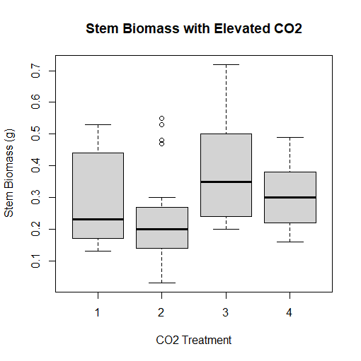
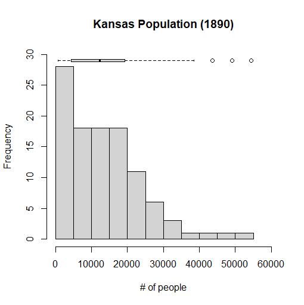

Introduction:
In this assignment, we will be working on creating graphs and charts using the R computer language in order to graphically display information and data provided to me by the instructor. We will also be walking through how to construct this using code in the RGui, which is the official software application that runs R, therefore meaning R doubles as a software application and a programming language. We will be constructing a Strip Chart, a Histogram, and a Boxplot in this assignment. Of course, the first thing I have to do is change the directory to the folder where I stored the datasets I will be using in this assignment so that the computer knows where to even search for them at all. In my case, they are in a folder labeled Exercise6, which is stored in the Documents folder in my computer. All I have to do is open RGui, then click "File" and then "Change dir", go inside the Documents folder, and then open the Exercise6 folder. We start with two datasets w1.dat and trees91.csv. The first thing we need to do is import them using the read.csv command to store them into two new variables we will define, w1 and tree, respectively.
> w1 <- read.csv(file="w1.dat", header=TRUE, sep=",")
> tree <- read.csv(file="trees91.csv",header=TRUE,sep=",")
Strip Charts:
 Now we have the datasets we want loaded into the variables. The w1.dat dataset is a subset of some of the data featured in the trees91.csv dataset. If you type names(tree) into RGui, then you get the list of variables stored inside of the dataset. We are interested in the LFBM variable, which is the biomass of the leaves on a tree. If you do the same to the w1.dat dataset, you find it only has one variable inside it: vals. This stands for the values for the LFBM variable in the trees91.csv dataset, but in an environment of a higher concentration of carbon dioxide. We are interested in creating a strip chart of the w1.dat dataset. We will get a series of data points along a straight line, but with duplicate values being stacked on top of each other. We don't want this, so we're really going to create a stacked strip chart, where duplicate variables are stacked on top of each other along the line. This way, we can see every single point in the w1.dat dataset. I could choose to create a stacked strip chart or a jittered strip chart, but I plan on choosing the latter to make the chart look less clustered, and more professional. The result shown to the right is the final product that we are aiming for. The code below is how I was able to accomplish this.
> stripchart(w1$vals, method="jitter", main="Leaf Biomass in High CO2 Environment", xlab="Leaf Biomass")
Histograms:
 Another way I could have depicted the chart we did in the Strip Charts section is to use a histogram. This is the most common chart used for a frequency distribution, and the preferred chart by many. This chart depicts how many times a certain value in the w1.dat dataset corresponds to a value. For instance, how many times in the data set would a value equal 1? Or 4? Or 100? And so on. Documentation that came with the datasets indicates that the biomass is measured in grams, and the most common value in the dataset is 0.5 grams. We can even overlay a strip chart on top of the histogram we are about to create to provide even further context. To do this, we have to make the limit of the y-axis just a little bit higher so we can make space on the chart to put the strip chart onto. Unfortunately, we usually will not have enough space to have a stacked or jitter chart, so an ordinary strip chart will have to do in this case. But it provides even further context for the data that is charted by the histogram. I was able to accomplish this in RGui using the following code:
> hist(w1$vals,main="Leaf Biomass with Elevated CO2", xlab="Leaf Biomass", ylim=c(0,16))
> stripchart(w1$vals, add=TRUE, at=15.5)
Density Plots:
Though histograms are commonly used in graphing data, they are not as graphically strong as density plots when they are alone (more on this in a bit). A density plot will smooth out the boxes in the histogram to create the familiar bell curve shape that we all know and love. The term "density plot" is short for a kernel density plot, which are designed to provide a much smoother distribution shape on our chart. If we create a density plot, we get two numbers automatically printed at the bottom of the graph belonging to two variables: N and bandwidth. N refers to the number of data points on our data set used to create the density plot, while bandwidth refers to the standard deviation of the "smoothing kernel" used to generate the bell curve shape of our density plot. If the value of the bandwidth is higher, the bell curve of the density plot will be even smoother, but will not show as many nuances that the data contains. It will basically look closer and closer to one long arc. If we decrease the value of the bandwidth, the bell curve begins to resemble the shape of the histogram more, and the intricacies of the data will be gradually revealed. When creating density plots, we want to adjust the bandwidth to a value as low as reasonably possible, as the next segment of this exercise will demonstrate. In order to create the image to the right, I used the following code:
> plot(density(w1$vals, bw=0.2))
Combining Histogram and Density Plot:
Now comes the part where we combine the histogram we created earlier with the density plot. As mentioned before, we want to adjust the bandwith of the density plot so that it resembles the histogram's shape as much as possible, yet it will still remain smooth in shape in order to make our chart graphically strong enough. We don't want the bandwith to be too low, as the bell curve would be too curvy, and begin to resemble the chart of a function plotted onto your graphing calculator, and the purpose of the bell curve would be eliminated. This is where color and graphic design of charts begin to come in too. We plan on overlaying the density plot on top of the histogram, and if both charts are the same or similar color, they blend in, and the meaning of the chart gets muddled. Contrasting colors work best when doing this, and in our situation, we are going to make the histogram gray, and the line representing the density plot red. We accomplish this task using the following code:
> hist(w1$vals, prob=TRUE, main="Leaf Biomass in High CO2 Environment", xlab="Biomass (g)", col="gray")
> lines(density(w1$vals), col="red", lwd=2)
Boxplots:
 At long last, the trees91.csv data set comes into use. We will use this data set for a boxplot, which depicts a graphical view of the mean, median, mode, quartiles, minimum, and maximum of a dataset. This is also known as a box and whisker plot, as the extrema of the data set are depicted using "whiskers", like whiskers on a cat. We want to create a boxplot for the biomass of the stem of the tree. However, documentation that came with the trees91.csv dataset shows that the experiment was conducted at three different levels of ambient CO2, as well as a control group. Each tree that was grown in this experiment was grown in different chambers with different amounts of CO2 present, with the control group tree not being grown in a chamber at all. We want to plot four boxplots-- one for three chambers of increasing CO2, as well as the control group-- onto one graph which RGui lets us accomplish. To do this, we are interested in the variable STBM or stem biomass, as well as the C variable, or the amount of CO2 present in each chamber or CO2 treatment, identified with a number. These can be accessed by putting tree$STBM and tree$C into our code, respectively. 1 represents the tree that is not grown in a chamber, 2 represents the tree grown in a chamber with 350 mL (microliter) of CO2 per liter of air, 3, the tree in a chamber with 525 mL of CO2 per L air, and 4, the tree in a chamber with 700 mL CO2 per L air. Outliers in treatment #2 are shown by circles on the chart. I was able to accomplish everything I wanted using the following code:
> boxplot(tree$STBM~tree$C, main="Stem Biomass with Elevated CO2", ylab="Stem Biomass (g)", xlab="CO2 Treatment")
Combining Histograms and Boxplots:
 Just like what we did earlier in this exercise, we can combine a histogram and a boxplot. In this case, however, we are going to make a horizontal boxplot so it can fit onto our histogram chart. This time, we are going to use a different dataset, which contains census data of the population of each county in the state of Kansas in the year 1890. This histogram will depict how many counties in Kansas have a certain amount of people in them. It's not going to be completely precise, since the computer will be simplifying the data a bit to make it easier to present. If it didn't do this, we would have a very wide histogram, as no two counties are likely to have exactly the same population, and in 1890, and Kansas had over 100 counties at the time. I will also be putting on a boxplot that summarizes the data that is present in the dataset, which we will store into a variable I'll call kansas. If I click on the dataset that I'm using, I see that I am interested in the variable labeled Y1890, which represents the population of each county circa 1890. Here is the code I needed to accomplish this, and complete the assignment:
> kansas <- read.csv(file="KansasCensus.csv", header=TRUE, sep=",")
> hist(kansas$Y1890, freq=TRUE, main="Kansas Population (1890)", xlab="# of people", ylim=c(0,30), xlim=c(0,60000))
> boxplot(kansas$Y1890, horizontal=TRUE, at=29, add=TRUE, axes=FALSE)